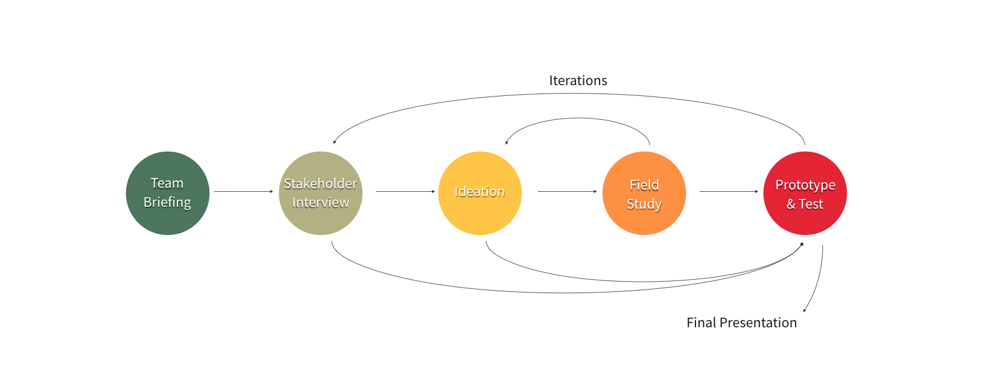
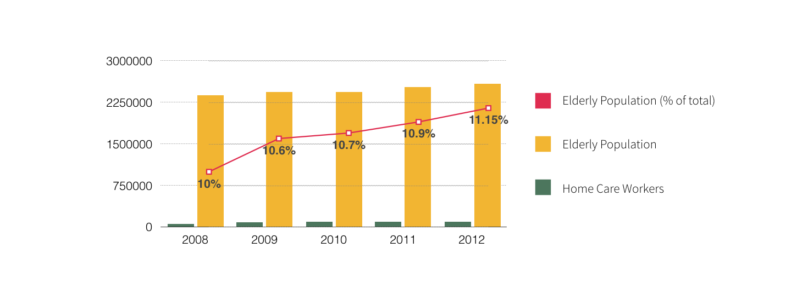
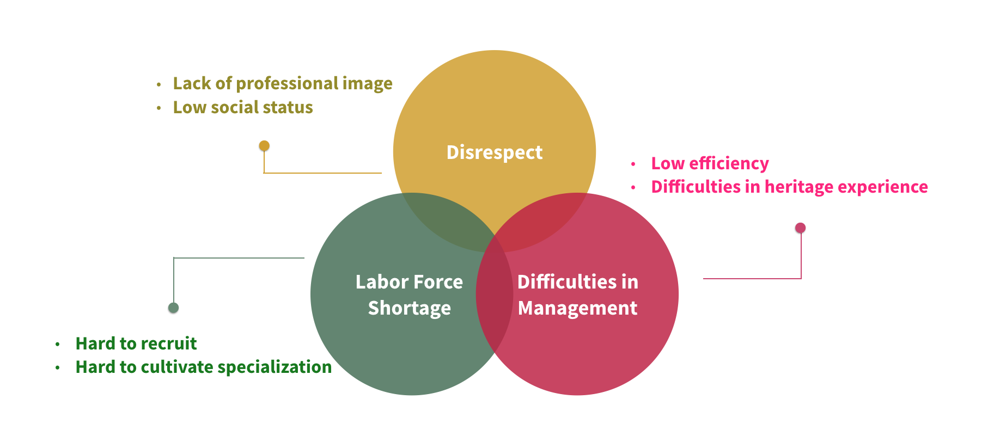
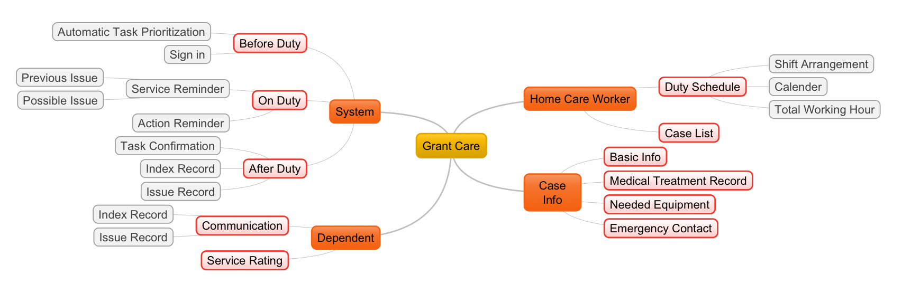
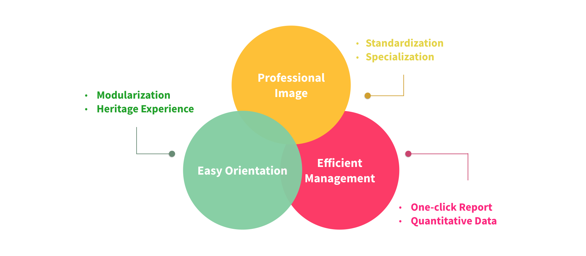

Introduction
Design Process
Problem Statement
There was little growth of the amount of home care workers while the ratio of the elderly of total population is getting higher and higher. To break down the problem, we concluded below challenges faced by home care workers by the means of field study and contextual inquiry.

Point of View
How to increase efficiency and service quality of home care workers?
How might we help home care workers finish their jobs more quickly and accurately?
How might we optimise information system and interface to make it easier to use?
How might we make it easier to evaluate the physical conditions of the elderly?
How might we sync the updated condition of the elderly with their dependents?
How might we help home care institution to make their business scalable?
Key Features
Service Module
Grant Care provides modulized task flow for the home care workers. Instead of memorizing different tasks for different elderly, or referring to long paper documents, a home care worker only has to follow the customized task flow on Grant Care.
Auto-generated Report
Once a home care worker finishes the service for the day, Grant Care will generate a report not only for recording the work that has been done but also for updating the health information of the elderly with the families.
Duty Schedule
Grant Care provides digital check-in and check-out for home care workers to reduce the repetitive paper work. Home care workers can check their working schedule and working hours on the duty schedule page.
Interactive Prototype
Service Mindmap

Impact

Award
First Place and Crowd Favorite, 5% Design Action, 2015